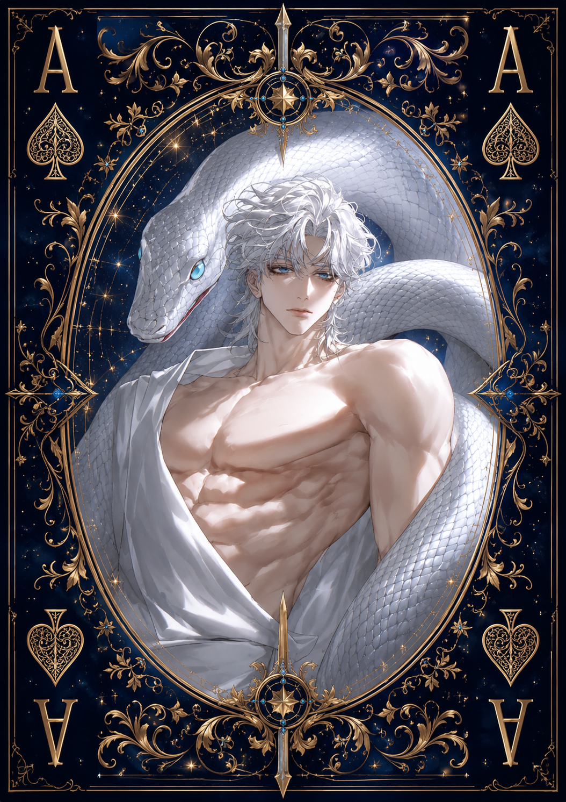

| Race | Ancient Serpent Deity |
| Gender | Male |
| Age | Over 3,000 Years |
| Nation | Frostpeaks |
| Weapon | Frostfang Spear |
| Magic | Ancient Ice Magic |
Aelion is an ancient serpent deity who dwells within the deepest and most isolated reaches of Frostpeaks. His existence is closely bound to the frozen land, granting him an extraordinary awareness of what occurs throughout the region. Even from his secluded domain, very little within Frostpeaks escapes his notice.
Despite his divine status and overwhelming magical power, Aelion rarely behaves with the solemnity expected of an ancient god. He is sarcastic, mischievous, and deliberately acts foolish whenever it amuses him. His carefree behavior often causes others to underestimate him, something Aelion seems to enjoy.
Known throughout the frozen lands as the Serpent God, Aelion possesses immense magical power and can become extremely dangerous when provoked. His mastery of ancient ice magic allows him to manipulate the frozen environment around him, while the Frostfang Spear serves as a physical extension of his supernatural power.
However, Aelion is not naturally hostile. Beneath his teasing personality lies an ancient attachment to Frostpeaks and a deep awareness of everything that threatens its balance. Disturbances capable of endangering his homeland are among the few things that can make the playful serpent god reveal his truly serious nature.